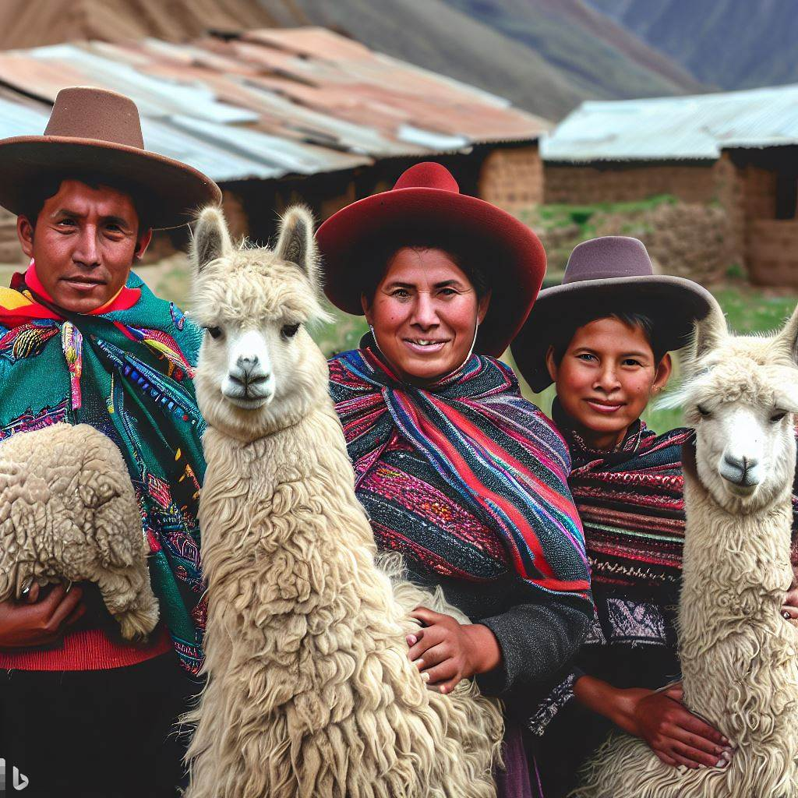

Hello and Welcome!
Thank you for considering us as your next alpaca yarn provider! Let us give you a brief overview of who we are and what The Soft Alpaca represents.
Please continue reading below.
Our Beginnings
The Soft Alpaca is a small company that had a modest and humble beginning with the idea of bringing the warmth and softness of Peru's indigenous alpaca wool to the world!
Founded in December 2022 by it's current owner, The Soft Alpaca aimed to be the go-to provider of the world's finest alpaca yarns to hobbyists and other small companies.
With the help of Houston, TX's burgeoning Peruvian community, we have rapidly grown our business and operation and have started supplying customers in ever greater quantities of alpaca yarn.

Our Peruvian crafters employ their time-honed and ancient craftsmanship to produce the world's softest and finest alpaca wool which is then processed into spools of yarn.